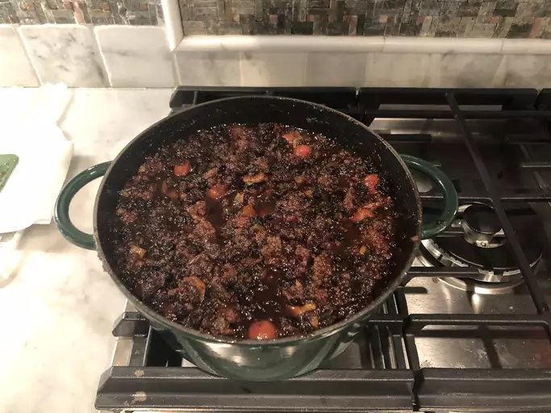

Mincemeat Pie
Home

Description
Step back in time with this traditional mincemeat pie, featuring a flavorful blend of fruits, spices, and a hint of brandy encased in a golden, flaky crust.
Ingredients
- 1 ¼ pounds round steak, cut into small pieces
- 1 cup apple cider
- 4 Granny Smith apples - peeled, cored and finely diced
- 2 ½ cups dried currants
- 2 ½ cups raisins
- 1 (16 ounce) jar sour cherry preserves
- 1 ⅓ cups white sugar
- ½ pound chopped candied mixed fruit peel
- ½ cup butter
- 1 teaspoon ground ginger
- ½ teaspoon ground cloves
- ½ teaspoon ground nutmeg
- ½ teaspoon ground cinnamon
- ½ teaspoon salt
- 1 (16 ounce) can pitted sour cherries, drained
- 1 (14.1 ounce) package double-crust pie pastry, thawed
- 2 tablespoons heavy cream
- 1 teaspoon white sugar, for sprinkling
Steps
- Combine steak and cider in a Dutch oven. Bring to a boil, then reduce heat to a simmer. Cover and cook until steak is tender, about 20 minutes. Remove steak to a cutting board; coarsely chop, then return to the pot.
- Stir in apples, currants, raisins, cherry preserves, 1 1/3 cups sugar, mixed fruit peel, and butter. Add ginger, cloves, nutmeg, cinnamon, and salt. Simmer, uncovered, over low heat until mixture is very thick, about 1 hour 30 minutes. Stir in cherries and remove from heat.
- Transfer filling to a container and allow to cool at room temperature. Cover tightly and refrigerate for at least 1 week before using.
- Preheat the oven to 350 degrees F (175 degrees C).
- Line a 9-inch pie dish with 1 pastry crust. Spoon filling into crust and cover with second pastry crust. Crimp edges and cut several slits into top pastry. Brush with cream and sprinkle with 1 teaspoon sugar.
- Bake in the preheated oven until golden brown, about 45 minutes.